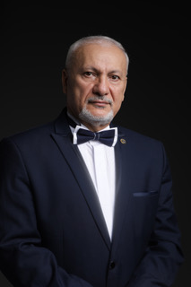

Фестиваль здоровья и красоты «Территория Радости» в Ларнака-Никосии, Республика Кипр 1-6 ноября 2024 года.
Яшар Ибадов – доктор медико-биологических наук, профессор по специальности «общая психология и интегративная медицина», практикующий врач, психолог, биорадиолог, заведующий лабораторией психогигиены и медико-психологической диагностики при Институте Образования Республики Азербайджан, генеральный директор Медико-психологического центра «Яшадан эллер» (Целительные руки), Амбассадор Международного Института Бизнеса 2023 (Баку, Азербайджан), автор новой науки Альтернативная психология.
После окончания в 1985 году Бакинского медицинского института Яшар Ибадов успешно занимается врачебной деятельностью, а с 1996 по 2001 год занимает должность главного врача санатория «Маариф» (Баку).
В 2002-м Яшар Ибадов стал известным специалистом в области психодиагности, психофизиологии и психокоррекции и организовал медико-психологический центр «Яшадан эллер» (Целительные руки). Одновременно Яшар Садай оглы возглавил лабораторию психогигиены и медико-психологической диагностики, функционирующую в Институте Образования Республики Азербайждан. В обоих этих структурах он продолжал свой научный поиск и открытия. Они стали базисом для написания кандидатской диссертации по теме «Методика диагностики и коррекции функционального состояния биологических систем». Диссертация на соискание ученой степени доктора медико-биологических наук была защищена в 2005-м году.
Результатом многолетних исследований стал новый авторский метод психографии, который позволяет гармонизировать психическое состояние человека и адаптировать его к постоянно изменяющимся условиям окружающей среды. Метод, относящийся к новой науке «Альтернативная психология», был отмечен Евразийским патентом и защищен авторским правом (2003). На основе методологии науки «Альтернативная психология» автором сделан ряд изобретений в области информационной медицины и нанотехнологий: метод «Фазовый портрет Материнство», методика МПП тесты, гармонизаторы Ключ Жизни, Символ Жизни, Зеркало Жизни Яй- Осидо и другие. Профессором Ибадовым издано более 30 значимых научных работ, в том числе несколько монографий.
Яшар Ибадов является действительным и почётным академиком в академиях ведуших стран мира: Англии, Турции, России, США, Украины, Грузии. Лаборатория, возглавляемая доктором Ибадовым, стала обладателем международного приза «Европейское качество», его научные изобретения были отмечены дипломами и орденами «Шевалье» и «Командор», а также золотой медалью Международной выставки «Эврика» в Бельгии.
С 2010 года доктор Яшар Ибадов практикует благотворительные коллективные сеансы по методике Психографии.
В 2020 году за вклад в интеллектуальное развитие мира Яшар Садай оглы Ибадову присвоено звание Почетного профессора Академического союза Оксфорда.
С 2023 года Яшар Ибадов – Амбассадор Международного Института Бизнеса.
В сентябре 2024 года на международном форуме «Преображение человека», который прошёл на базе Школы Причинности, Я. Ибадов представил новые методические разработки и символы, полученные на основе технологий Психографии. Коллеги высоко оценили достижения Альтернативной психологии, способствующие формированию здоровой творческой личности, коррекции человеческих отношений, ситуаций и взаимодействий с внешней средой.
В 2024 г. Яшар Ибадов номинирован на получение Нобелевской премии.
Методы новой науки АП получили признание и внедрение в психологии, педагогике, биологии, физиологии, медицине, экологии, этимологии, этнографии, истории, искусстве и т. д. Исследование проблемы взаимодействий во времени может представлять интерес для философии и физики (изучение общих свойств пространства и времени); для медицины (оздоровление человека и профилактика болезней); для биологии (расширение познания свойств жизни); для психолого-педагогической практики (расширение мировоззрения учеников и студентов, раскрытие и направление творческого потенциала).
{kind=link}
Сертификат спикера научно-практической ассамблеи проекта BEST MEDICAL PRACTICE,
выдан Яшару Ибадову за активное участие и выдающуюся презентацию его инновативной
технологии. Фестиваль здоровья и красоты «Территория Радости» с успехом прошел в
Ларнака-Никосии, Республика Кипр 1-6 ноября 2024 года.
{kind=link}